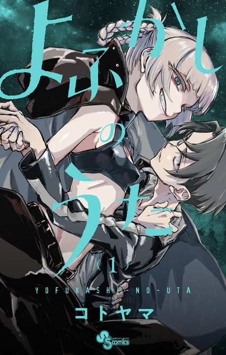

Animeter
 Anime
Anime
MangaCall of the Night
Arcs
Episodes numbered continuously across both seasons (Season 2 episode 1 = episode 14), as on Wikipedia.
Night Flight
Insomniac middle-schooler Ko Yamori starts wandering the city at night and meets the carefree vampire Nazuna Nanakusa.
The Vampire Circle
Nazuna's vampire friends take an interest in Ko, and he learns the rules of becoming one of them.
Detective Anko
A vampire-hunting detective arrives and the dark side of vampire life comes into view.
Anko's Offensive
Ko and Nazuna try to fall in love in earnest just as Anko steps up her hunt by targeting vampires' human ties.
Kabura's Past
A flashback follows nurse vampire Kabura Honda, whose history is tied to Nazuna's origins.
Searching for Nazuna's Human Ties
Ko and Nazuna retrace her earliest human connections, uncovering a link to Anko.
Halloween Night
On Halloween, Anko openly declares war on the vampires and the conflict comes to a head.